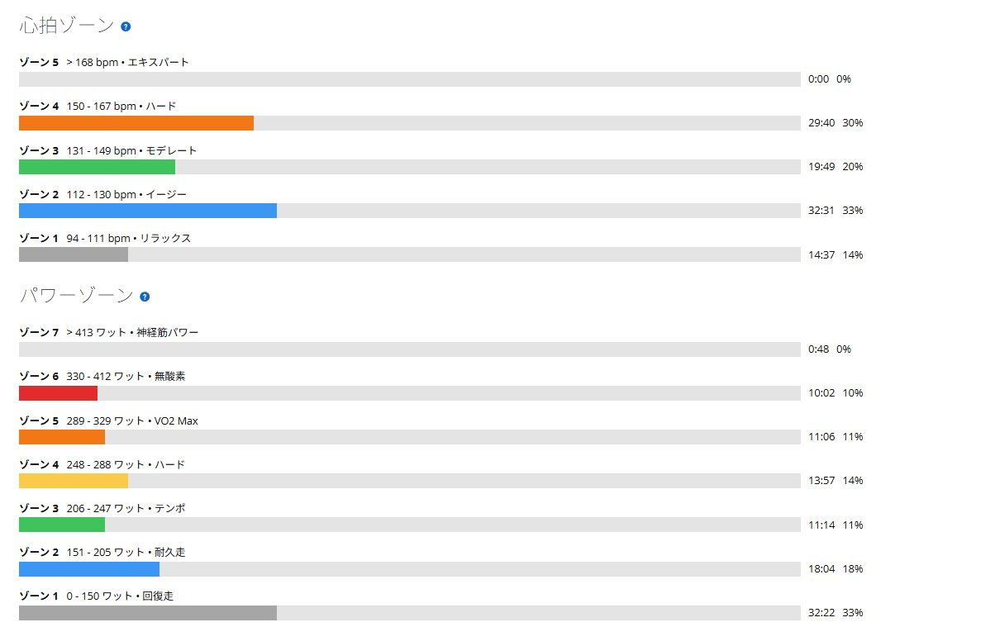

暑さで踏めないと思ったのに琴平309W。唐沢・琴平の高負荷ライド
ここ数日は膝前側の軽い違和感を見ながら低強度を続けていた。違和感が消えたので、今日は唐沢から琴平へ回り、最後にいつものストレートまでしっかり踏んでみた。
琴平では暑くてまったく踏めていない気がした。それでも帰宅後にデータを見ると平均309W。体感と数字がきれいに食い違った。

唐沢から琴平、最後のストレートまで
全体は44.34kmで1時間38分。平均185W、NP241W、IF0.876、TSS124.1だった。75kg基準では平均約2.47W/kg、NP約3.21W/kgになる。1時間半を少し超えるライドとしては明確な高負荷日だった。
今日は唐沢で終わらず、そのまま琴平へ回って最後のストレートまで踏む構成。短い高出力だけではなく、負荷を重ねた後も出力を維持できるかを見るライドになった。
唐沢は8分半で302W
唐沢は8分28秒で平均302W、NP309W。平均心拍152bpm、平均ケイデンス91rpmだった。体感は「若干頑張った」くらいだったが、FTP275Wに対して約110％なので普通にしっかり頑張っている。
ケイデンスを91rpmで保てたのも良かった。重いギアを踏み潰したというより、回転を保ちながら出力を出せていた。
琴平は暑くて踏めない。それでも309W
琴平は11分33秒で平均309W、NP310W。平均心拍158bpm、最大165bpm、平均ケイデンス90rpmだった。走っている時は暑くて脚が動かず、出力も出ていないと思っていた。
ところが実際は唐沢より7W高い。踏めなかったのではなく、熱で余裕がなくなり、苦しさの割に進んでいないように感じていたらしい。調子よく出した309Wではなく、暑い中で最後まで耐えた309Wだったことに価値があると思う。
ラストストレートは信号で分断
最後のストレートは信号でラップが分かれた。前半は12分で平均266W、後半は4分半で平均286W。信号区間を除いてまとめると約16分半、平均約272Wになる。
唐沢と琴平を走った後なので当然つらい。それでも信号で一度リズムが切れた後に286Wまで戻せた。登りで出し切って終わらず、もう一度持続する力が残っていたのは収穫だった。

暑熱適応56％でも暑いものは暑い
平均気温は28.6℃、最高気温は34℃。Garminの推定発汗量は約1.4Lで、暑熱適応は56％だった。暑さへ少しずつ慣れてきてはいるが、完成という数字ではない。
そもそも暑熱適応が上がっても暑さが安全になるわけではない。琴平で踏めないと感じたのも脚だけではなく、熱ストレスの影響が大きかったと思う。今後も水分、塩分、糖質はきちんと持っていきたい。
膝の違和感は出なかった
ここ数日気になっていた膝前側の違和感は、走行中も走行後も出なかった。唐沢302W、琴平309W、最後のストレート約272Wまで踏んでも問題なし。ひとまず通常練習へ戻せそうだ。
高負荷を数日続けた後に違和感が出て、強度を落としたら改善した。ただし疲労が原因だったとは断定しない。今後も違和感が戻るようなら、また強度を落として様子を見る。
今回やってみて思ったこと
今日は「暑くて踏めない」と思っていたのに、琴平では309W出ていた。苦しいから出力が低いとは限らないし、気持ちよく走れているから高いとも限らない。体感と数字の両方を残しておく意味がよく分かる日だった。
唐沢で高く入り、琴平で耐え、最後にもう一度FTP付近を続ける。富士ヒル本番も毎回最高の気温や体調になるとは限らないので、条件が悪い中で耐える練習としてはかなり良かったと思う。
自分用メモ
- 全体44.34km / 1時間38分 / 獲得標高506m / 平均185W / NP241W / IF0.876 / TSS124.1
- 唐沢8分28秒 / 302W / NP309W / 平均心拍152bpm / ケイデンス91rpm
- 琴平11分33秒 / 309W / NP310W / 平均心拍158bpm / ケイデンス90rpm
- 最後のストレート信号を除いて約16分半 / 平均約272W
- 暑さ平均28.6℃ / 最高34℃ / 推定発汗量約1.4L / 暑熱適応56％
- 膝走行中・走行後とも違和感なし。原因は断定せず継続確認
- 翌日予定4本ローラーでSST20分×2。255Wから始め、余裕があれば2本目後半を少し上げる